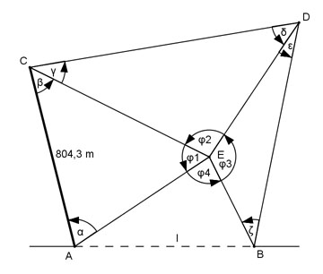
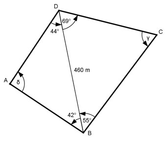
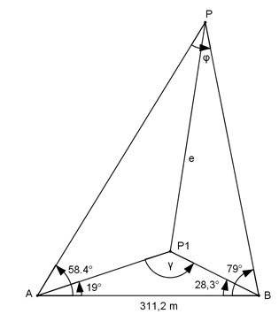
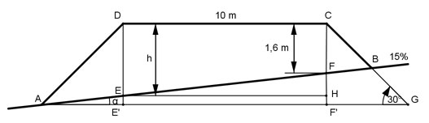
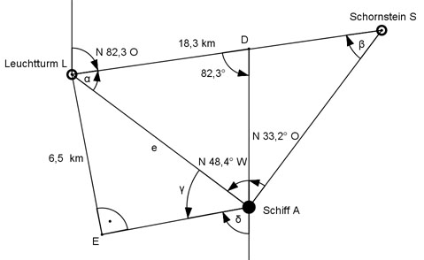
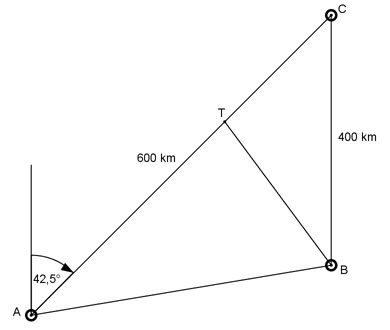
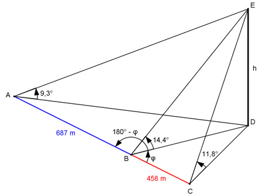

Aufgabe 181
Eine Brücke führt von A nach B über einen Fluss.
Von A aus stecken Vermesser eine 400 m lange
Standlinie am Ufer nach C ab. Sie messen die Winkel
CAB = 67,8° und BCA = 49,3°.
Berechnen Sie die Brückenlänge l.
Aufgabe 182
Zwischen zwei Punkten A und B liegt ein Bach.
Ein Punkt C, der nicht auf AB liegt, ist von
A 86,4 m entfernt. B wird von A aus unter 47,6° im
Uhrzeigersinn und von C aus unter 97,2° gegen
den Uhrzeigersinn angepeilt. Wie groß ist AB?
AB = m
Aufgabe 183
2 Punkte A und B sind unzugänglich.
Um ihre Entfernung zu bestimmen, legen die Vermesser
von einem Punkt C auf der Verlängerung von AB aus
eine Standlinie von 182,3 m zum Punkt D fest.
Peilwinkel: ACD = 53,5°, ADC = 87,2° und BDC = 23,3°.
Wie groß ist die Entfernung AB?
Aufgabe 184
Die Punkte A und B sind unzugänglich.
Um ihre Entfernung zu bestimmen, hat ein Vermesser
eine Standlinie CD von 364,7 m Länge abgesteckt
und folgende Winkel gemessen BCD = 34,8°. ACD = 68,2°,
ADC = 29,9° und BDC = 80,6°. Berechnen Sie AB.
AB = m
Aufgabe 185
2 Punkte A und B sind durch ein Hindernis getrennt.
Zur Bestimmung ihrer Entfernung hat der Vermesser
2 Punkte C und D gewählt, die 287,3 m auseinander liegen.
Weiterhin ist A von C 345,7 m und B von D 264,9 m entfernt.
Die Peilwinkel sind ACD = 102,6° und BDC = 97,4°.
Wie groß ist AB,
wenn C und D auf derselben Seite von AB liegen?
Wie groß ist AB,
wenn C und D auf verschiedenen Seiten von AB liegen?
Aufgabe 186
Die Punkte A und B sollen durch einen Tunnel verbunden werden.
Um dessen Länge l zu bestimmen, sind die waagerechte Länge
AC = 804,3 m und die Horizontalwinkel α = 72,2°, β = 53,1°,
γ = 31,9°, δ = 42°, ε = 30,2° und ζ = 45,5° gemessen worden.
Berechnen Sie l.

l = m
Aufgabe 187
Die Höhe h eines Berges soll bestimmt werden.
Dazu misst ein Vermesser von den Eckpunkten einer
waagerechten Standlinie AB mit einer Länge von 326,75 m
aus die Horizontalwinkel α = 83,1° und β = 64,5°
sowie den Höhenwinkel γ = 26°.
Wie hoch ist der Berg?
Aufgabe 188
Von einem Aussichtspunkt C aus erblickt man zwei
gegenüberliegende Punkte A und B an den Ufern
eines Flusses unter den Tiefenwinkeln α = 18,5°
und β = 25,8°. Die Strecke AB erscheint horizontal
unter dem Winkel γ = 31,3°.
Berechnen Sie die Breite b des Flusses, wenn C 186,5 m
über A liegt und den Sehwinkel δ, unter dem AB von
dem Aussichtspunkt aus erscheint.
b = m
Aufgabe 189
Eine Brücke führt von A nach B über ein Tal.
Von einem Punkt C im Tal aus erscheinen A und B
unter den Höhenwinkeln α = 10,4° und β = 13,1°
und die Strecke AB unter dem Horizontalwinkel γ = 78,8°.
Berechnen Sie die Länge l der Brücke, wenn A 53,6 m
und B 88,7 m höher liegt als C.
Aufgabe 190
Zwischen drei gleich hoch liegenden Aussichtspunkten
A, B und C sind die Entfernungen bekannt. AB = 4,1 km,
AC = 3,2 km und BC = 5,7 km. Wie groß ist der Sehwinkel α,
unter dem von A aus die beiden anderen Punkte erscheinen?
α = °
Aufgabe 191
Die Entfernung AB zwischen 2 Ortsmitten kann nicht
direkt gemessen werden. Von einem Punkt C aus beträgt
die Entfernung AC = 290 m und BC = 600 m und der
∡ BAC = 100,3°. Wie groß ist AB?
Aufgabe 192
Wie groß sind die Seiten DC und AB des
dargestellten Grundstücks?

AB = m
Aufgabe 193
Ein rechteckiges Walmdach hat eine Länge von 16 m
und eine Breite von 12 m. Die dreieckige Dachfläche
hat eine Neigung von 60°, die trapezförmige eine von 45°.
Wie groß sind der Neigungswinkel α der schrägen
Dachkanten und der Winkel β zwischen zwei
aneinanderstoßenden Dachflächen?
Aufgabe 194
Die Entfernung e zwischen den beiden Punkten P und P1
wird bei einer Landesvermessung gebraucht.
Wie groß ist e?

e = m
Aufgabe 195
Durch einen Berg soll ein waagerechter Straßentunnel
von A nach B gebohrt werden. Zur Ermittlung von
dessen Länge l steckt man auf dem Berg eine waagerechte
Standlinie CD mit einer Länge von 485,7 m ab und misst
die Winkel DCB = 41,5°, ACD = 59,5°, CDA = 67,3°
und CDB = 70,7°. Wie groß ist l?
Aufgabe 196
Von einem Aussichtspunkt aus sieht man 500 m einer
waagerechten Straße unter einem Sehwinkel von 54,5°.
Die Endpunkte sieht man unter den Tiefenwinkeln 26,7°
und 18,2°. Berechnen Sie die Höhe h, die der
Aussichtspunkt über den Endpunkten liegt.
h = m
Aufgabe 197
Vom Punkt A aus gehen in einem Bergwerk 2 waagerechte
Stollen unter einem Winkel von 75° mit 325 m und 275 m
Länge ab. Welche Länge l hat ein Verbindungsstollen
zwischen den beiden Endpunkten?
Unter welchem Winkel α muss er vom Endpunkt des
längeren Stollen aus vorangetrieben werden?
Aufgabe 198
Mainz ist von Stuttgart 150 km und von Freiburg
225 km entfernt. Freiburg von Stuttgart 130 km.
Mainz liegt von Stuttgart aus in Richtung N 25° W.
In welcher Richtung liegt Freiburg von Mainz aus?
S = ° O
Aufgabe 199
Um die Höhe h eines Turmes über NN zu bestimmen
wurde eine geeignete horizontale Standlinie AB mit
einer Länge von 108,1 m festgelegt. Punkt A befindet
sich auf einer Höhe von 168,8 m, B auf 171 m.
Die Instrumentenhöhen sind in A 1,4 m, in B 1,5 m.
Der Horizontalwinkel α in A ist 41,2°, β in B ist 68°.
Von A aus wird die Turmspitze mit einem Höhenwinkel
γ = 5,5°, von B aus mit δ = 6° angepeilt.
Wie groß ist h?
Aufgabe 200
3 Punkte A, B und C sind durch die Entfernungen
AC = 625,3 m, CB = 418,4 m und den Winkel
ACB = 152,6° festgelegt. Um die Entfernungen PA = x,
PB = y und PC = z zu bestimmen, sind die Winkel
CPA = 47,5° und CPB = 38,9° ermittelt worden.
Berechnen Sie x, y und z.
z = m
Aufgabe 201
Für die Projektierung einer Brücke über einen Fluss
braucht man den Abstand zwischen den markanten
Punkten A und B. Um ihn zu ermitteln, legt man an
einem Ufer wegen Sichtbehinderungen 2 Standlinien AC
und AD mit AC = 46,2 m, AD = 53,8 m und dem
eingeschlossenen Winkel CAD = 145,8° fest. Weiterhin
werden die Winkel BCA = 95,5° und ADB = 68,6° gemessen.
Wie groß ist AB?
Aufgabe 202
Ein Ballon befindet sich auf der Höhe h und spiegelt
sich in einem See. Von einem Punkt A aus, der sich
auf einer Höhe von 28,3 m befindet, erscheint er unter
dem Höhenwinkel α = 55,4°, sein Spiegelbild unter dem
Tiefenwinkel β = 58,2°.
In welcher Höhe befindet sich der Ballon?
h = m
Aufgabe 203
Ein Vermessungsschiff ist dabei, eine Küste zu
vermessen. Der Abstand zwischen den Stationen
A und B ist bekannt und beträgt 2 966,8 m.
Um den Abstand zwischen Station B und C zu ermitteln,
werden vom Land aus der Schiffsmast M als Bezugspunkt
gewählt und die Winkel MAB = 30,3°, ABM = 95,9°,
MBC = 89,7° und BCM 51,4° gemessen. Die Messung des
Winkels BCM hat sich verzögert, dabei ist das Schiff
13 m in die Verlängerung von BM abgetrieben worden.
Wie groß ist BC?
Aufgabe 204
Eine Eisenbahnbrücke soll über ein Tal von A
nach B verlaufen. A liegt 61,3 m und B 52,3 m
über einem Talpunkt C. Der Horizontalwinkel bei
C = 53,3°, der Höhenwinkel von C zu A = 10,8°,
der zu B = 8,4°.
Wie groß ist die Länge l der Bahnstrecke?
l = m
Aufgabe 205
Eine Kirchturmspitze C wird von 2 Punkten A und B
aus angepeilt. A und B liegen in einer Vertikalebene
mit C und sind 57,9 m voneinander entfernt. A liegt
auf einer Höhe von 378 m, B auf 376,1 m. Die
Instrumentenhöhe zur Peilung beträgt in A 1,41 m,
in B 1,39 m. Die Spitze wird von A aus unter 11,9°,
von B aus unter 15,6° angepeilt.
Auf welcher Höhe h liegt die Turmspitze?
Aufgabe 206
Um die Höhe h einer Skulptur an der Fassade eines
Turms zu bestimmen, werden von einer 100,3 m langen
Standlinie AB aus, die in einer Vertikalebene mit
der Figur liegt und von A nach B um 0,2% steigt,
Peilungen vorgenommen. Zum Fuß der Skulptur beträgt
der Höhenwinkel von A aus 31,5°, von B aus 43°.
Zum Kopf von A aus 32,4°.
Welche Höhe h hat die Skulptur?
h = m
Aufgabe 207
Um wie viel m liegt der Punkt A im Gelände höher
als der Punkt B und unter welchem Höhenwinkel α
ist er von B aus zu sehen? Die Punkte A, B, C und D
liegen in einer Vertikalebene. C und D sind
deswegen zur Peilung gewählt worden, weil A von B
aus nicht einsehbar ist.
Aufgabe 208
Vor dem Bau eines Bergtunnels braucht man seine
Länge l und den Neigungswinkel α. Dazu werden am
Tunnelein- und -ausgang 2 Standlinien AB = 262,7 m
und CD = 380,5 m abgesteckt. B liegt vom Tunnel-
eingang 144,2 m entfernt, C vom Tunnelausgang 79,3 m.
Eine Mastspitze auf dem Berg, die mit den anderen
Punkten in einer Vertikalebene liegt, erscheint von
A aus unter dem Höhenwinkel 29°, von B aus unter 40,5°,
von C aus unter 58,8° und von D aus unter 32,3°.
Wie groß sind l und α?
α = °
Aufgabe 209
Der Damm soll als Lärmschutz entlang der Straße
aufgeschüttet werden. Wie groß sind die Höhe h
und die Längen AD und AB?

Aufgabe 210
Um seine Position genau zu bestimmen, peilt ein
Schiff einen Leuchtturm unter N 48,4° W und einen
Schornstein unter N 33,2° O an. Schornstein und
Leuchtturm liegen 18,3 km auseinander. Der
Schornstein liegt in Richtung N 82,3° O vom
Leuchtturm aus. Wie groß ist die Entfernung e des
Schiffes vom Leuchtturm, und welchen Kurs muss es
fahren, damit es an ihm im Abstand von 6,5 Seemeilen
vorbeifährt? 1 sm = 1,852 km.

e = km
Aufgabe 211
Ein Schiff fährt einen Kurs S 32,8° O und peilt
einen Leuchtturm in S 63,5° O an. Nach einer
Weiterfahrt von 1 h 15 min mit einer Geschwindigkeit
von 8 sm/h peilt es ihn unter N 72,6° O an. Wie groß
ist die Entfernung e des Schiffes vom Leuchtturm?
Aufgabe 212
Ein Flugzeug startet um 10.20 Uhr in A mit einem
Kurs N 42,5° O, um das 600 km entfernte C um
11.50 Uhr zu erreichen. Um 10.36 Uhr startet vom
400 km südlich von C liegenden B aus ein Flugzeug,
das sich mit dem ersten zum Weiterflug nach C
treffen will. Welchen Kurs K muss das zweite fliegen,
wenn es mit einer Geschwindigkeit von 450 km/h
unterwegs ist?
Zu welchem Zeitpunkt z treffen sie sich, und wie groß
ist die Entfernung e dieses Treffpunktes von C?

z = .12 Uhr
Aufgabe 213
Ein Flugzeug fliegt mit einer Geschwindigkeit
von 350 km/h in Richtung N 24° O. Es weht ein
Wind aus Südwest mit 50 km/h. Wie groß ist die
wahre Fluggeschwindigkeit v, und welchen Kurs K
fliegt das Flugzeug wirklich?
Aufgabe 214
Früher stellten die Luftschiffe ihre Höhe h mit
der Hilfe eines Echolotes fest. Wie hoch ist ein
solches Fluggerät, wenn der Schall im Heck ausgesandt
und 190 m entfernt im Bug aufgefangen wird und es mit
einer Geschwindigkeit von 125 km/h fliegt, die Schall-
geschwindigkeit 333 m/s beträgt und das Signal vom
Aussenden bis zum Empfang 6 s braucht? Unter welchem
Winkel α treffen die Schallwellen auf der Erde auf?
α = °
Aufgabe 215
Zwei Kräfte F1 = 34,5 N und F2 = 57,2 N greifen
unter einem Winkel α = 68,7° an einem Punkt eines
Körpers an. Wie groß ist die Resultierende R und
der Winkel β, den sie mit der Kraft F1 bildet?
Aufgabe 216
Wie groß sind die Winkel α und β, die entstehen,
wenn eine Kraft R = 235 N in die zwei Teilkräfte
F1 = 160 N und F2 = 135 N zerlegt wird?
β = °
Aufgabe 217
Wie groß sind die Teilkräfte F1 und F2, wenn sie
zur Resultierenden R = 6 375 N die Winkel α = 48,4°
und β = 26,6° bilden?
Aufgabe 218
Welche Größe G und Richtung β zu F2 hat die Kraft,
die den Kräften F1 = 48,5 N und F2 = 57,2 N,
die in einem Punkt unter einem Winkel von 102,4°
angreifen, das Gleichgewicht hält?
β = °
Aufgabe 219
In einem Punkt greifen die Kräfte F1 = 145 N,
F2 = 230 N und F3 = 204 N an. Wie groß ist die
Größe R der resultierenden Kraft und deren
Richtung γ zu F3, wenn die Winkel F1F2 = 98° und
F2F3 = 147°?
Aufgabe 220
Ein Flugzeug fliegt mit v = 280 km/h auf dem Kurs
rw. 255°. Es weht ein Wind aus WNW mit 8,5 m/s.
Welchen Weg s legt das Flugzeug in einer Stunde
zurück, und um welchen Winkel α wird es abgetrieben?
α = °
Aufgabe 221
Welchen Kurs K muss ein Flugzeug mit einer
Geschwindigkeit von 320 km/h fliegen, wenn
ein Wind aus SW mit 9 m/s weht und es genau
nach Osten fliegen will?
Aufgabe 222
Ein Flugzeug fliegt mit 340 km/h auf dem Kurs
rw. 105°. Es wird durch Wind aus SSO um 5°
abgetrieben. Wie hoch ist die Windgeschwindigkeit w?
w = m/s
Aufgabe 223
Ein Punkt P soll im Gelände festgelegt werden.
Dazu peilt man von ihm aus 3 Punkte A, B und C
einer geraden Straße an und misst: AB = 540 m,
BC = 325 m, Winkel APB = 48,3° und BPC = 31,5°.
Wie groß sind AP, BP und CP?
Aufgabe 224
Eine Hausfront ist 20 m lang und soll von einem
22 m gegenüberliegenden Haus aus von einem
Scheinwerfer mit einem Öffnungswinkel von 45° so
angestrahlt werden, dass dessen Licht komplett
ausgenutzt wird. An welcher Stelle h muss man
den Scheinwerfer anbringen?
h liegt m von der Mitte der Hausfront entfernt.
Aufgabe 225
Eine Turmuhr hat einen Durchmesser von 1,6 m,
ihr Mittelpunkt liegt 22,5 m hoch. Aus welchem
Abstand a erscheint sie unter einem Sehwinkel von 2°,
wenn die Augenhöhe des Betrachters 1,5 m beträgt?
Aufgabe 226
Zwei Punkte P und Q sind durch ein Hindernis getrennt.
Um ihre Entfernung e zu bestimmen, verlängert man PQ
über P hinaus um 155 m bis O und über Q hinaus um 175 m
bis R. Dann misst man von einem Punkt S aus, der
außerhalb von PQ liegt die Winkel OSP = 21,7°,
PSQ = 53,1° und QSR = 16,9°. Wie groß ist e?
e = m
Aufgabe 227
Um die Höhe h eines Berges zu bestimmen,
peilt man sie von drei Punkten A, B und C
einer geraden Straße aus unter den Winkeln α = 9,3°,
β = 14,4° und γ = 11,8° an. A und B liegen 687 m
und B und C 458 m auseinander. Wie groß ist h?

Aufgabe 228
Um die Länge l eines Tunnels zu bestimmen, steckt
man auf dem Bergrücken eine waagerechte Standlinie
AB von 485,7 m Länge ab und misst die Horizontalwinkel
α = 59,4°, β = 41,5°, γ = 67,3° und δ = 70,7°.
Wie groß ist l?
l = m